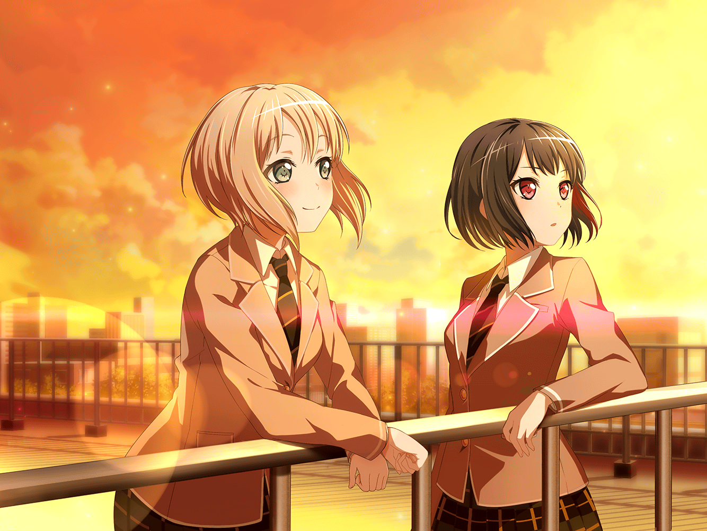

翌日
通学路
巴
ん、まぶし……
巴
（すごい夕焼けだな。
こんな夕焼けを見てると、中学の頃、
屋上で５人で夕焼けを見たのを思い出すな）
巴
（……結局、離れても５人でいた時のことを考えてる。
ま、ずっとあの５人で一緒にいたんだから当然か）
巴
（謝らないと、な。ひまりにも、モカにも。
……それから、蘭にも）
巴
もしもし。ひまり？ 夕焼けがキレイだからひまりも見てみろよ。
……ひまりも今、見てた？
……はは、そっか。同じだな
巴
モカや蘭も……どこかで見てるのかな。この夕焼け

羽丘女子学園 屋上
モカ
（蘭だったら絶対ここにいるって思って来たけど……
やっぱりいる）
モカ
（でも、何を話せばいいのかな？ 『いい夕日だね？』とか？
ダメだ～意味わかんないよ～）
蘭
……モカ？
モカ
……！ いやあ～、見つかっちゃったか～。
あたしの気を察知するとは、お主、やるな～
蘭
……意味わかんない。隣、くれば
モカ
うん、そうする
モカ
なんか、ここにくるのも久しぶりだな～
モカ
中学の頃の思い出は、ほとんどここで起きたことだなあ。
……ま、バンド結成してからほぼ毎日ここにきてたもんね～
モカ
こっから見る夕焼け、やっぱりキレイだなあ。
ねー蘭。覚えてる？ 中学の文化祭ライブの後で見た夕焼け
蘭
……うん
モカ
中学の文化祭ライブが、あたし達のデビューだったもんねー。
あたしもよーく覚えてる
蘭
練習の時と全然違って、あたし達の音だけじゃなくて、
歓声があたし達の音と交じり合って、１つの音楽になって……
まるで、曲が生きてるみたいにどんどん盛り上がっていって……
蘭
これが『ライブ』なんだって、思った。……月並みな言葉だけど、『ライブ』の魅力に気づいたっていうか、感動したっていうか……
モカ
ライブのあと、カンゲキしてさー、
みんなで泣きながらここで夕焼け見たねえ。
ひーちゃん、『私、この景色忘れないっ！』とか言ってたよね
モカ
……んー、青春してんなー。あたしら
蘭
『この景色、忘れない』……か。
あたしも、一度も忘れたことないよ。
あの日の夕焼けも、演奏も……みんなの泣いた顔もね
モカ
あたしの泣いた顔は忘れてほしいなー
蘭
絶対、忘れない
モカ
ダメかあ～

蘭
……また、みんなで夕焼け、見たいな……
モカ
……蘭
蘭
……見られる、かな？
モカ
うん。見られるよ
蘭
……
蘭
あたし……まだみんなとバンド、続けたい。
今ここで、やめたりしたくない
モカ
……
蘭
巴に、家の事を言われて気づいたんだ。
あたし、父さんから……華道から逃げてたんだって。
知らないうちに、バンドをその逃げ道にしてた
蘭
……だから、家のことには触れられたくなくて、
あの時はつい飛び出して……巴には痛いとこつかれたよね。
ほんと、鋭いヤツ
蘭
巴には今度、謝らないとね。もちろんひまりにも、つぐみにも。
それから……父さんにも
モカ
うん
蘭
……モカの前ならこんな風に言えるのにね。
なんでいざってなると言えないんだろう？
モカ
もしかしてあたしのこと、カボチャかじゃがいもだと
思ってないー？
蘭
あははっ、そうかも
モカ
もー、ひどいなあー
蘭
冗談。
……ありがと。その……いつも隣にいてくれて
モカ
隣に……
蘭
モカ？
モカ
いやあ～、あんまり褒めないでよー。照れちゃうなあ
蘭
……じゃあもう一切褒めないし、感謝の言葉も言わない
モカ
えー。あたしは褒められて伸びるタイプなんだけどな～
蘭
はいはい。
ね、明日、つぐみのお見舞いに行こうよ。つぐみとも話、したい
モカ
うん。いーよ
蘭
じゃあ、約束
モカ
ん～、でっかい夕日だなあ。……今思い出したんだけどさ、
夕焼けの次の日って、晴れやすいんだって
モカ
だから、明日は晴れだね。
……明日はきっと、いいことあるよ。蘭
蘭
うん